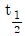
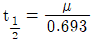
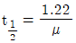
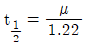
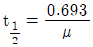

방사선비파괴검사산업기사 (2015-09-19 기출문제)
1과목: 비파괴검사 개론
1. 자분탐상시험에서 결함 누설자속에 대한 설명으로 옳은 것은?
- 시험체표면에 요철이 있는 경우 포화자속밀도에 달하면 요철부에도 누설자속이 많이 발생하여 자분을 흡착하고 결함자분모양의 식별이 곤란해진다.
- 결함누석자속밀도는 시험체 재의 자속밀도가 높을수록 크기 때문에 자분탐상시험은 일반적으로 포화자속밀도 보다 조금 높은 자화상태에서 실시된다.
- 강자성체 중에 자속이 포화되어 그 이상 자속이 흐르지 않는 상태를 최대자속은 자계의 세기와 무관하다.
- 강자성체에 발생하는 자속은 자계의 세기와 무관하다
(정답률: 58%)

2. 다음 중 초음파탐상시험으로 가장 검출하기 어려운 결함은?
- 평면상의 결함
- 두꺼운 주강품 내의 기공
- 균열
- 라미네이션(lamination)
(정답률: 54%)
3. 다음 비파기검사법 중 모서리 효과(Edge effect)와 표피 효과(Skin effect)의 영향이 가장 큰 것은?
- 누설검사법
- 침투탐상시험법
- 와전류 탐상시험법
- 방사선투과시험법
(정답률: 73%)
4. 비파괴검사가 발달한 이유로 가장 적합한 것은?
- 파괴시험으로 정확한 검사가 어려워서
- 사용재료의 안전성 확보를 위하여
- 철저한 검사를 하기 위하여
- 고가의 품질을 위하여
(정답률: 50%)
5. 침투탐상검사의 분류방법으로 적절하지 않은 것은?
- 관찰방법에 의한 분류
- 세정방벙에 의한 분류
- 침투방법에 의한 분류
- 현상방법에 의한 분류
(정답률: 62%)
6. 70%Cu +30%Zn 합금의 명칭으로 옳은 것은?
- 인바(invar)
- 퍼멀로이(permalloy)
- 모넬메탈(monel meta)
- 커트리지 브라스(cartridge brass)
(정답률: 65%)
7. 다음 중 인(P)의 영향으로 옳은 것은?
- 저온취성의 원인이 된다.
- 적영취성의 원인이 된다.
- 입자의 조대화를 방지한다.
- 연신을 증가시키고 용접성을 좋게 한다.
(정답률: 54%)
8. 수소저장 합금의 금속간 화합물이 갖추어야 할 조건으로 옳은 것은?
- 평형 수소압 차이가 클 것
- 수소 저장시에는 생성열이 클 것
- 수소의 흡수 방출 속도가 느릴 것
- 활성화가 쉽고, 수고 저장 용량이 클 것
(정답률: 29%)
9. 다음 중 라우탈(Lautal)의 조성으로 옳은 것은?
- Al - Si
- Al - Mg
- Al - Cu - Si
- Al -Cu - Mg - Ni
(정답률: 10%)
10. 가공경화재의 풀림온도가 너무 높고, 가열 시간이 길면 소수의 결정립이 다른 결정립과 합쳐지는 현상을 무엇이라 하는가?
- 1차 재결정
- 2차 재결정
- 3차 재결정
- 4차 재결정
(정답률: 40%)
11. 공정주철의 탄소성분 함량은 약 몇 wt%인가?
- 0.025wt%
- 0.8wt%
- 1.5wt%
- 4.3wt%
(정답률: 30%)
12. 피아노 선재를 A3점 이상으로 가열하여 400~550℃의 열욕에 담금질하여 얻는 조직은?
- 마텐자이트
- 소르바이트
- 트루스타이트
- 잔류오스테나이트
(정답률: 50%)
13. A, B 2종류의 금속이 고용체를 만들 때 전기저항이나 강도의 증가가 최대가 되는 비율은?
- 비율과 관계없다.
- A : B = 50 : 50
- A : B = 30 : 70
- A : B = 20 : 80
(정답률: 22%)
14. 비자성, 비강도가 큰 것을 목적으로 하여 Al, Mg, Ti 등의 경금속을 기지로 한 저용융점계 섬유강화금속은?
- FRM
- FRS
- PRS
- PRM
(정답률: 38%)
15. 초경합금(sintered hard alloys)의 특징이 아닌 것은?
- 경도가 높다.
- 마모성이 크다.
- 압축강도가 높다.
- 고온에서 변형이 적다.
(정답률: 71%)
16. 직류아크 용접에서 정극성에 대한 설명으로 틀린 것은?
- 비드 폭이 좁다.
- 모채의 용입이 얕다.
- 용접봉의 녹음이 느리다.
- 모재에 (+)극 용접봉에 (-)극을 연결한다.
(정답률: 54%)
17. 용접자세에 대한 기호 중 아래보기 자세에 해당하는 기호는?
- O
- V
- H
- F
(정답률: 19%)
18. 서브머지드 아크용접에서 발생되기 쉬운 결함이 아닌 것은?
- 기공
- 언더컷
- 피닝
- 고온균열
(정답률: 50%)
19. 불황성가스 금속 아크용접에서 사용되는 와이어의 송급방식이 아닌 것은?
- 푸시 방식(push type)
- 풀 방식(pull type)
- 더블 풀 방식(double-pnll type)
- 푸시-풀 방식(push-pull type)
(정답률: 48%)
20. 아크전류가 200A,아크전압 25 V, 용접속도 15cm/min일 때 용접 단위길이 1cm단 발생하는 용접 입열은 얼마인가?
- 15000 J/cm
- 20000 J/cm
- 25000 J/cm
- 30000 J/cm
(정답률: 62%)
2과목: 방사선투과검사 원리 및 규격
21. 다음 중 피사체 콘트라스트에 영향을 미치는 인자가 아닌 것은?
- 시험체의 두께
- 방사선의 선질
- 산란방사선
- 필름의 종류
(정답률: 65%)
22. 이동 방사선투과시험법(in-motion radiography)에 관한 설명으로 틀린 것은?
- 긴 길이 이음용접부의 촬영에 적용된다.
- 조리개의 사용으로 방사선 위험이 적다.
- 방사선원이 이동하지 않기 때문에 기하학적 불선명도가 커져 선원-필름간 거리가 가까운 경우에만 사용할 수 있다.
- 용접부 전체를 검사하기 위해서는 여러 구간 나누어 감사해야 한다.
(정답률: 48%)
23. 방사선투과검사에서 시험체 콘트라스트에 영향을 주는 인자가 아닌 것은?
- 현상액의 강도
- 시험체의 두께 차
- 방사선의 선질
- 산란 방사선
(정답률: 70%)
24. 필름 판독시 방사선투과 사진의 구비조건 중 확인할 사항이 아닌 것은?
- 투과사진의 표시내용 및 흑화도
- 투과도계 또는 계조계의 선택
- 필름의 오손상태
- 시험자의 지식과 경혐
(정답률: 84%)
25. 방사선의 흡수계가 μ이고 두께가 t라 할 때 반가층(

)을 나타낸 식으로 옳은 것은?



(정답률: 18%)
26. Co-60 점선원으로부터 10m 거리에 있는 작업종사자가 받는 피복선량이 640mR/h이었다. 작업종사자의 피복선량을 20mR/h이하로 하려면 남 차폐벽의 두께를 약 몇 mm로 하여야 하는가? (단, 납의 흡수계수는 0.0693mm-1이다.)
- 10mm
- 20mm
- 50mm
- 80mm
(정답률: 16%)
27. 감마선 조사기에 대한 일일점검 사항이 아닌 것은?
- 표면누설선량률 측정
- 내부튜브에 대한 육안검사
- 앞마개 및 뒷마개 부착 여부
- Pigtail 이 고정되지 않고 유격이 있는지 확인
(정답률: 59%)
28. 방사선동위원소의 γ선 방출 후 변화에 대한 설명으로 틀린 것은?
- γ선 방출 후 질량수는 줄어든다.
- γ선 방출 후 원자번호는 변함이 없다.
- γ선 방출 후 에너지는 감소한다.
- 방사선동위원소는 각각 특유의 에너지를 갖는다.
(정답률: 44%)
29. 다음 입자가속기 중 자장에 의하여 전자가 가속되는 것은
- 선형가속기
- 반데그라트형
- 베타트론
- 공진 변압기형
(정답률: 44%)
30. X, γ선에 의한 전리작용이라 할 수 없는 현상은?
- 관전효과(Photoelectric effect)
- 콘프톤산란(Compton scattering)
- 전자쌍생성(Pair production)
- 소멸복사(Annihilation)
(정답률: 75%)
31. 집적선량이 250mSV 인 만 25세의 방사선작업 종사자의 연간 최대 피복허용선량은 얼마인가?
- 50mSv
- 70mSv
- 100mSv
- 120mSv
(정답률: 40%)
32. 종사자가 사고로 인하여 긴급 작업시 0.3Sv의 피폭을 받았을 경우 선량제한은?
- 향휴 5년 동안 방사선 작업을 제한한다.
- 즉시 방사선 작업에 종사하지 않도록 하여야 한다.
- 유효설량한도를 초과한 경우에 그 초과된 설령을 2로 나누어 얻은 값에 해당하는 년수를 지나는 동아 20mSv로 제한한다.
- 유효선량한도를 넘지 않을 경우는 년간 50mSv (5년간 100mSv를 초과하지 않는 범위 내에서)를 최대허용피폭선량으로 한다,)
(정답률: 57%)
33. 방사선 작업종사자에 대해 비부 및 혈액검진을 실시하지 않아도 되는 경우는?
- 입사시
- 정기검진시
- 과피폭시
- 퇴사시
(정답률: 50%)
34. 다음 중 방사능 오염물이 다량 함유된 채소를 섭취한 경우 방생하는 외부피폭을 측정하기 위한 기기가 아닌 것은?
- BF3 카운터 (BF3 Counter)
- 포켓도시미터 (Pocket Dosimeter)
- 서베이미터 (Surver Meter)
- 전식계수기 (Whole Body Counter)
(정답률: 58%)
35. 주상품의 방사선 투과 시험방법(KS D 0227)에 따라 주강품의 방사선투과시험을 수행할 때 시험부의 두께가 12mm이고 슈링키지의 경우에는 시험시야의 크기(지름)를 얼마로 해야 하는가?
- 30mm
- 50mm
- 70mm
- 100mm
(정답률: 25%)
36. 강용접 이음주의 방사선투과 시험방법(KS B 0845)에서 강판의 맞대기 용접 이음부를 촬용하는 경우 계조계의 사용방법이 옳은 것은?
- 모재의 두께 25mm에 계조계 15형을 사용하였다.
- 모재의 두께 30mm에 계조계 25형을 사용하였다.
- 모재의 두께 30mm에 계조계 25형을 사용하였다.
- 모재의 두께 45mm에 계조계 25형을 사용하였다.
(정답률: 70%)
37. 알루미늄 주물의 방사선 투과시험방법 및 투과사진의 등급분류방법(KS D 0241)에 따라 알루미늄 주물의 방사선 투과시험을 실시할 때 시험부 및 투과도계 위치에서의 필름 종도의 설명 범위는?
- 1.5~4.0
- 1.2~4.3
- 2.0~3.0
- 2.0~3.5
(정답률: 15%)
38. 개인방사선 측정용구 중 측정하한이 가장 낮은 설량계는?
- 필름뱃지
- 열형고아선량계(TLD)
- 유리선량계
- 직독식 포켓선량계
(정답률: 45%)
39. Ir-192에 대한 반가층이 10mm인 어떤 물질을 20mm 두께로 차폐하고, 차폐체 후방에서 측정한 방사선량률이 1.2mSv엿다면 차폐 전방사선량룰은?
- 2.4mSv
- 4.8mSv
- 9.6mSv
- 19.2mSv
(정답률: 48%)
40. ASME Se. V Art.2에 규정된 농도계 교정에 사용되는 스텝웨지 교정 필름이 가져야 할 범위와 최소한의 스텝은?
- 농도범위 : 1.0~3.5, 최소한의 스텝 : 4
- 농도범위 : 1.0~3.5, 최소한의 스텝 : 5
- 농도범위 : 1.0~4.0, 최소한의 스텝 : 4
- 농도범위 : 1.0~4.0, 최소한의 스텝 : 5
(정답률: 44%)
3과목: 방사선투과검사 시험
41. 노출도표에서 고정되는 조건이 아닌 것은?
- 사용된 X –선 발생장치
- 선원-필름 간 거리
- 필름의 종류
- 시험체의 두께
(정답률: 34%)
42. X선, γ선에 의한 방사선투과검사 촬영시 다음 중 시험체에서 발생되는 산란선을 제거 또는 흡수 할 목적으로 사용되는 것들의 조합은?
- Cone, Collimator
- Mask, Lead Screen
- Filter, Diaphragm
- Penetrameter, Shim stoc
(정답률: 43%)
43. 필름을 정착액에 넣으면 감광되지 않은 필름유제가 완전히 제거될 때까지 걸리는 시간을 무엇이라 하는가?
- 클리어링시간
- 정착시간
- 경화시간
- 산화시간
(정답률: 47%)
44. 필름특성곡선으로부터 알 수 있는 필름의 성질이 아닌 것은?
- 필름콘트라스트
- 선명도(sharpness)
- 관용도(latiude)
- 필름 γ값(γ value)
(정답률: 53%)
45. 공업용 X선 발생장치를 사용하여 방사선투과검사를 할 때 전류 5mA에 6분의 노출을 주어 필름농도 Z를 얻었다. 같은 농도의 필름을 얻으려 할 때 다른 조건은 변경하지 않고 노출시간만 3분으로 변경시켰다면 전류는 얼마로 해야 하는가?
- 2.5mA
- 5mA
- 10mA
- 15mA
(정답률: 67%)
46. 방사선투과검사에 사용되는 휴대형 농도계의 영점 조절을 어떻게 행하는가?
- 사진농도 표준 필름(step tablet)에 의하여 한다.
- 국가에서 지정한 표준 검교정 기관에서 한다.
- 필름 관찰기 면에 직접 접촉하여 실시한다.
- 스위치를 켜는 순간 영점 조절이 된다.
(정답률: 40%)
47. 다음 중 방사선투과검사로 결함깊이를 측정할 수 있는 방법으로 가장 많이 이용되는 것은?
- 이동방사선투과검사
- 입체방사선투과검사
- 고속도방사선투과검사
- 자동방사선투과검사
(정답률: 74%)
48. 평판 용접부의 방사선 투과사진 농도 측정에 관한 설명으로 옳은 것은?
- 최저농도는 필름 중앙부분인 경우가 많다.
- 최고농도는 필름 중앙부분인 경우가 많다.
- 사진농도는 관찰기 밝기에 따라 변하지 않는다.
- 농도계 영점은 1장의 필름상에서는 변하지 않는다.
(정답률: 25%)
49. X선관의 표적이 갖추어야 할 특성으로 옳은 것은?
- 원자번호가 낮아야 한다.
- 용융온도가 낮아야 한다.
- 열전도성이 낮아야 한다.
- 증기압이 낮아야 한다.
(정답률: 57%)
50. X선과 물질과의 상호작용 현상이 아닌 것은?
- 광전효과
- 톰슨산란
- 전자쌍 생성
- 후방산란
(정답률: 40%)
51. 보통 방사선투과검사법으로는 시험체의 평면도를 나타내기 때문에 시험체의 두께를 측정하기 곤란하다. 스텝웨지(step wedge)를 이용하여 시험체의 두께를 대략적으로 측정하는 방법에 관한 사항 중 틀린 것은?
- 스텝웨지는 동일재질이어야 한다.
- 스텝웨지는 폭이 넓을수록 좋다.
- 스텝웨지는 가능한 한 시험체와 같이 촬영한다.
- 사용전압은 노출시간이 허용하는 한 높게 한다.
(정답률: 53%)
52. 공업용 방사선 투과사진의 현상제에 포함된 약품 중에서 반응촉진제의 주기능을 하는 것은?
- 페니돈(phenidone)
- 하이드로퀴논(hydroquinone)
- 탄산나트륨(sodium carbonate)
- 브롬화칼륨(potassium bromide)
(정답률: 50%)
53. 다음 중 방사선 투과사진 판독에 있어서 인공결함의 원인과 결과가 올바르게 연결된 것은?
- 압력자국 - 방사선 투과사진상의 둥근 점
- 정전기자국 - 필름이 전체적으로 얼룩덜룩한 자국
- 간지자국 - 유체의 압력에 기인되는 희거나 검은 점
- Fog현상- 현상시간이 너무 길거나 현상액의 온도가 너무 높은 경우
(정답률: 74%)
54. 선원의 강도가 30Ci인 Ir-192를 사용할 때 두께가 45mm인 철판으로 차폐하면 같은 위치에서 방사선량은 처음의 몇 %로 감소하는가? (단, Ir-192의 철에 대한 반가층은 15mm로 한다.)
- 1.25%
- 3.33%
- 12.5%
- 33.3%
(정답률: 53%)
55. 다음 중 방사선 투과사진 필름을 건조하기 위한 가장 적당한 온도는?
- 약 5℃
- 약 40℃
- 약 60℃
- 약 80℃
(정답률: 50%)
56. 다음 중 감마선에너지가 약 0.66MeV 이며, 반감기가 약 30.1년인 방사성 동위원소는?
- Co-60
- Ir-192
- Cs-137
- Tm-170
(정답률: 25%)
57. 공업용 감마선 조사장치를 이용한 방사선투과검사에서 원격조작장치의 선원 튜브 끝부분에 설치하여 방사선을 한쪽 방향으로만 방출하게 차폐하여 누설 방사선량을 줄이는 기기는?
- 앞마개(storage plug)
- 콜리메타(colimator)
- 뒷마개(storage cover)
- 선원 스톱(source stop)
(정답률: 79%)
58. 30Ci의 Ir-192로 두께 2인치 철판의 시험품을 촬영하여 사진농도 2.0인 사진을 얻으려면 선원과 필름 사이의 거리를 10인치로 할 때 노출시간은 얼마로 주어야 하는가? (단, 노출인자는 0.96이며 이때 필름농도는 2.0이다.)
- 2.4분
- 3.2분
- 4.8분
- 6.4분
(정답률: 67%)
59. 150 ~ 300kVp 정도의 X선 발생장치로 방사선투과시험을 할 때 다음 물질 중에서 산란선을 제거하기 위해 필름의 앞, 뒷면에 사용되는 것은?
- 납
- 종이
- 카드뮴
- 알루미늄
(정답률: 39%)
60. 주강품의 방사선투과사진상에 부분적으로 매우 검게 나타나 마치 주형의 일부분이 비어있는 상태로 나타났을 때 결함의 종류로 가장 적절한 것은?
- 불순물
- 콜드셧(cold shut)
- 미스런(misrun)
- 편석(segregation)
(정답률: 45%)